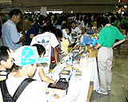
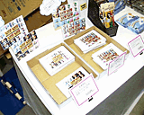
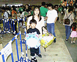
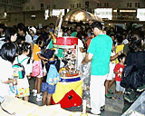

| 潜入!! 物販コーナー |
|  会場（イベントステージ横）に設けられた物販コーナーには、ポケモン関連グッズなどの人気商品がズラリ。来場の記念に、あるいはおみやげに、なにかひとつ買って帰りたくなるような魅力の品揃えです。しかし、ここに入るのがタイヘン!! 午後１時の段階で「１時間以上は待ちますね（スタッフ談）」という長蛇の列ができていたんだから！ 開場直後〜１時間くらいは、並ばずにお店のなかに入ることができたみたいだから、土・日に来場予定でショッピングを楽しみたい方は、まず、物販コーナーに足を運ぶといいかもしれませんネ!? |
|  では、店頭に並ぶ商品の一部を紹介しましょう。まず、会場でしか手に入らないのが『スマブラ１万人大会記念シール』。マリオやリンクなどの絵柄のＡバージョンと、ルイージやカービィなどの絵柄のＢバージョンの２種。プリントシールサイズのかわいいシールなので、いろんなところに気軽に貼れそう。次に、正午までに売りきれてしまったという大人気商品が、プリントなどを整理するのに活躍しそうな『クリップファイル』とマリルの『携帯ストラップ』。携帯ストラップは、ほかにもピカチュウ、レディバ、エレキッド、イマクニ？のがあったヨ。また、かなりの確率で買い物かごのなかに入っているのがマリルの『ぬいぐるみ（小）』と『ポケモン人形焼』。そのほか、ポケモンカード関連商品やＣＤ、腕時計、帽子などなど、本当にいろんなモノがあったヨ。 |
|  そんななか、買い物かごをいっぱいにしている３人家族を発見、ちょっとお話を伺ってみました。かごのなかに入っていたのは、『ポケモンクッキー』と『ポケモン人形焼』、『ポケモンカードサザンアイランド』がそれぞれ２個ずつ、『モンコレキーホルダー』のマリルとヤドキング、『ちびコロスタンプ』、『フィギュアコレクション』のルギアがそれぞれひとつづつ。聞けば、お菓子はお子さん（小学２年生）の同級生やそのお母さんへのおみやげ、あとはお子さんのモノなんだとか。こうしてお話を伺っているあいだにも、ステッカーにバッジに……いろんな商品をカゴに入れていくお子さん。うーん、なんでもほしくなっちゃうその気持ち、わかるなぁ。そうこうするうちに、会場で一番注目されてて、しかも高額な商品、マリルの『ぬいぐるみ（大）』（ちなみに6800円（税別）です）をお子さんがかかえてきたーっ！ それを見たお母さんは……やさしくうなずいて……買ってもらえてよかったネ！ |
 ところで物販コーナーには、参考出品ということで、アニメ版『ドンキーコング』のぬいぐるみも並んでましたよー。それから、10月に発売予定の『ドンキーコレクション』（ちいさなフィギュア）や、それを使って遊べる『決戦クランキーベース』（敵の基地のセット）などもショーケースのなかに入れられていました。みんな、興味深げに眺めていたなあ。
あと、物販コーナーのとなりには、１回500円のポケモンくじコーナーが。空クジなしとあって、こちらのほうも長い列ができていました。特等〜４等まではぬいぐるみが当たるんだけど、なかでも特等はピカチュウを背中に乗せたラプラスのぬいぐるみで、メチャクチャかわいい!! 当たるまでくじをひきたくなっちゃうひともいたと思います、ハイ。 |